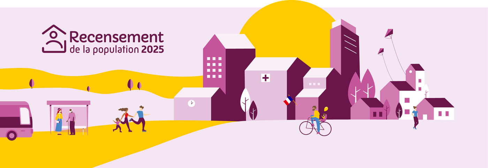

- Cet événement est terminé
Recensement de la population du 15 janvier au 21 février
15 janvier à 8 h 00 min - 21 février à 17 h 00 min
Navigation de l'événement

Pourquoi ?
Le recensement permet de connaître le nombre de personnes qui vivent en France. Il détermine la population officielle de chaque commune. Ses résultats sont utilisés pour calculer la participation de l’État au budget des communes : plus une commune est peuplée, plus cette participation est importante. La connaissance précise de la répartition de la population sur le territoire et de son évolution permet d’ajuster l’action publique aux besoins de la population en matière d’équipements collectifs (écoles, maisons de retraite, etc.), de programmes de rénovation des quartiers, de moyens de transport à développer…
Comment ?
Un agent recenseur, recruté par la mairie, vous remettra vos codes de connexion pour vous faire recenser en ligne. Si vous ne pouvez pas répondre en ligne, il vous remettra des questionnaires papier qu’il viendra récupérer à un moment convenu avec vous.
Merci de faire un bon accueil aux agents recenseurs.
LE RECENSEMENT SUR INTERNET : C’EST ENCORE PLUS SIMPLE !
Pour en savoir plus, rendez-vous sur www.le-recensement-et-moi.fr
>> Le recensement de la population est gratuit, ne répondez pas aux sites qui vous réclameraient de l’argent.